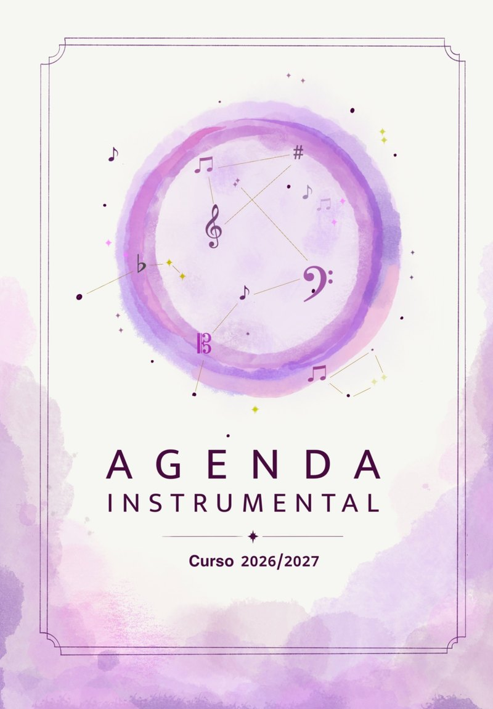
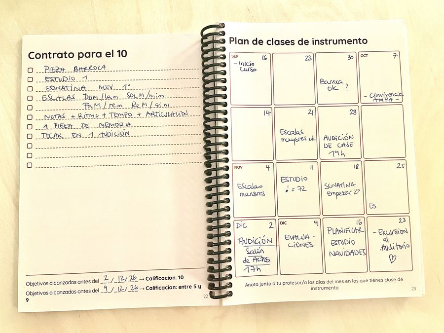
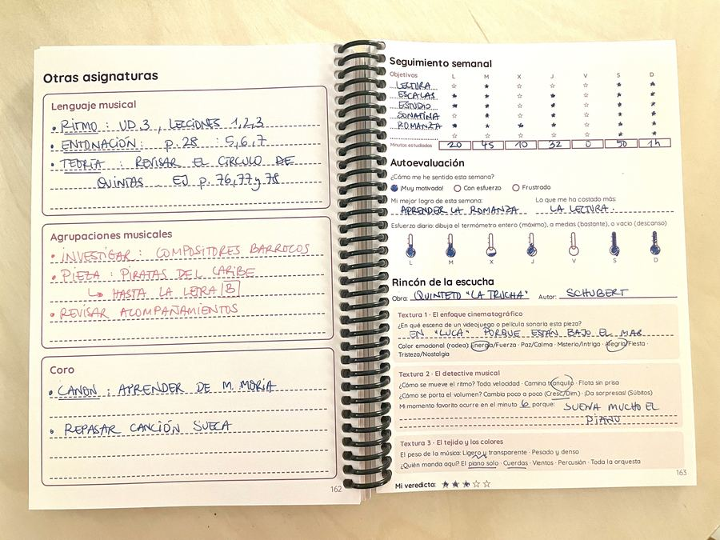

Agenda Instrumental
Calendario del curso, repertorio, eventos y seguimiento semanal.
Elegir mi agendaDesde 20 €
Nace en el aula
Esta agenda nace de la necesidad de que los alumnos tengan todo apuntado en un mismo sitio: qué están estudiando, para cuándo, y cómo van avanzando.
Desde el primer día de curso queda marcado en el calendario qué toca aprender y cuándo. Ver de un vistazo cuántas semanas quedan para conseguirlo cambia por completo la forma de planificarse.
Presente en las tres versiones
Calendario
de septiembre a junio
Repertorio
obras, autores y fechas
Eventos
audiciones y exámenes
Seguimiento
hojas de clase semanales
Apuntes musicales
papel pautado para tus ideas
Herramientas de estudio
trabajadas junto a tu profesor/a
Por dentro


Elige tu versión
Elige dónde imprimirla
Cada una de las tres versiones esta disponible en dos plataformas diferentes, cambia el encuadernado, el precio y el plazo.
Tu selección
Elige una versión arriba
Y después, dónde quieres imprimirla
Desde 20 €
según versión y plataforma
Elegir versiónPara quién es
Para alumnos de música de cualquier instrumento — no solo piano — tanto niños como adultos. La versión Específica Conservatorio está pensada al detalle para 3º y 4º de Enseñanzas Básicas en Andalucía; las otras dos sirven para cualquier curso y nivel.
También es un buen recurso para profesores que quieran recomendarla a sus alumnos o usarla en su propia enseñanza.
Preguntas frecuentes
¿Qué versión me conviene?
Si estudias 3º o 4º de Enseñanzas Básicas en un conservatorio de Andalucía, la Agenda para alumnos de 3º y 4º es la más cómoda: tiene un apartado para Lenguaje musical, Agrupaciones musicales y Coro por cada semana. Si estudias en Andalucía pero en otro curso, la versión Andalucía te deja escribir tus propias asignaturas. Fuera de Andalucía, la Nacional, con calendario sin festivos regionales.
¿Qué encuadernación es mejor?
La espiral de Lulu se abre completamente plana, lo que va muy bien para escribir sobre el atril o la mesa. La encolada de Amazon tiene un aspecto más de libro y llega antes. Las dos tienen exactamente el mismo contenido.
¿Sirve para cualquier instrumento?
Sí. El contenido se organiza por curso y repertorio, no por instrumento concreto.
¿Hay descuento para conservatorios o grupos?
No hay un descuento por volumen sobre el precio del ejemplar, pero encargando muchos a la vez en Lulu los gastos de envío por unidad bajan bastante. En Amazon desaparecen directamente con Prime.
¿Y si quiero devolverla?
Las devoluciones las gestiona la plataforma donde hayas comprado, según sus propias condiciones — Lulu o Amazon.
¿Qué tamaño tiene?
En Lulu es tamaño A5. En Amazon, 17,78 × 25,4 cm (con 1,22 cm de lomo).